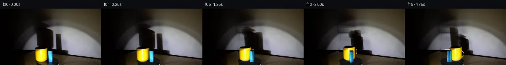
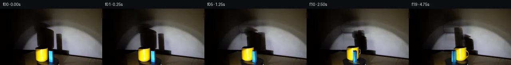
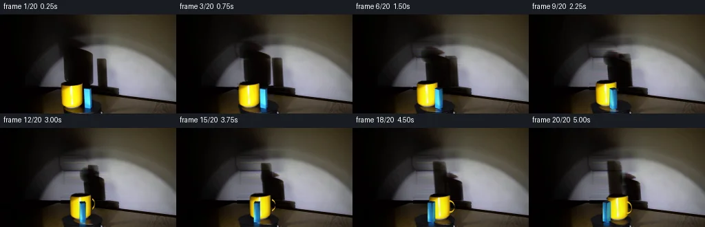
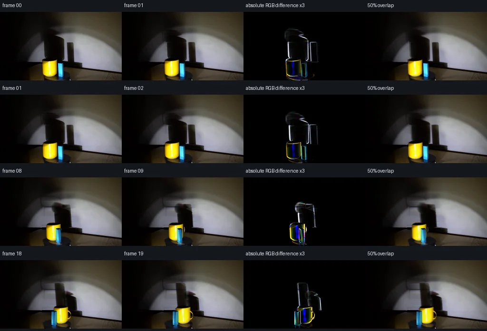

V0 · 初版
2026-11-05T04:35:44.403883+00:00 · RGB 74aebba6c2c2
![]()
Observable Generation Trace
把最终像素视频、Harness 冻结的每轮候选、真实工具事件和 Agent 自述放在同一页。可观测证据与模型自述分开标记，避免把“模型说它检查过”误当成真实工具调用。
![首帧]()
Static locked-off single-shot with fixed frame throughout filmed with constant framerate in real-time. The scene shows a realistic scientific demonstration. The scene only contains the described setup and actions. The yellow mug and the blue rectangular block sit on the black, clockwise-rotating platform, and the spotlight points toward the yellow mug and the block. The yellow mug and the blue rectangular block are rotating clockwise around the center of the black rotating platform, while the spotlight casts a large shadow on the wall behind it.
首帧显示在左侧播放器初始画面。Track 权限、隔离和 tensor 一致性来自 run manifest，而不是 METHOD.md。
默认勾选初版和最终版；可选其他版本一起同步播放。仅检查图更新的连续重复快照已合并，回退旧视频仍保留为一次修订。
Observable events
来源：events.jsonl + run manifest
此 Track 禁止读取输出图片。逐轮预览由外部 Harness 自动冻结，只用于事后审计，生成 Agent 当时看不到这些页面。
Frozen candidates
每张图来自该 round 的真实 00 / 01 / 05 / 10 / 19 帧

pixels 867182f54de36093 · code 5136edf62fea08ee
--- previous/generate.py
+++ current/generate.py
@@ -0,0 +1,473 @@
+"""PixelWorld continuation using source pixels and an analytic 2.5D turntable.
+No image viewer, network, learned model, or external rendering engine is used.
+"""
+from pathlib import Path
+import json
+import math
+import numpy as np
+import cv2
+from PIL import Image, ImageDraw
+from scipy.interpolate import PchipInterpolator
+from scipy.ndimage import gaussian_filter, map_coordinates
+from artifact_io import save
+
+ROOT = Path(__file__).resolve().parent
+TMP = ROOT / '.tmp'
+TMP.mkdir(exist_ok=True)
+W, H, SS = 256, 144, 4
+SOURCE = np.array(Image.open(ROOT / 'first_frame.png').convert('RGB'))
+F = SOURCE.astype(np.float32)
+XX, YY = np.meshgrid(np.arange(W, dtype=np.float32), np.arange(H, dtype=np.float32))
+HX, HY = np.meshgrid((np.arange(W*SS)+.5)/SS-.5,
+ (np.arange(H*SS)+.5)/SS-.5)
+
+
+def up(a):
+ return cv2.resize(a, (W*SS, H*SS), interpolation=cv2.INTER_CUBIC).astype(np.float32)
+
+
+def polygon_mask(points, blur=0.):
+ a = np.zeros((H*SS,W*SS),np.uint8)
+ pp = np.round((np.array(points)+.5)*SS).astype(np.int32)
+ cv2.fillPoly(a,[pp],255)
+ b = cv2.resize(a.astype(np.float32)/255,(W,H),interpolation=cv2.INTER_AREA)
+ return gaussian_filter(b,blur) if blur else b
+
+
+def over(im, color, alpha):
+ if alpha.ndim==2: alpha=alpha[...,None]
+ return im*(1-alpha)+color*alpha
+
+
+# Full cup mask includes its dark mouth; native antialiasing is retained.
+MUG_MASK = polygon_mask([(89,103),(91,100),(96,98),(106,97.8),
+ (114,98.4),(118.4,100.2),(119.4,103),(119.7,124),
+ (119,129),(117,132),(113,134.5),(105,136),
+ (98,135.4),(93,133.2),(90,130.5),(88.6,125)], .22)
+BLUE_MASK = polygon_mask([(121.1,107),(123,106.3),(129,106.6),
+ (132.7,107.4),(133.2,134.9),(130.5,136.2),
+ (123,136),(121.5,134.5)], .20)
+CUP_SHADOW_MASK = polygon_mask([(86,39),(94,33),(108,32.8),
+ (118,36),(126,44),(125,49),(130,50.5),(135,54),
+ (137.3,60),(137.3,104.5),(132,106),(91,106),
+ (87,101),(90,95),(91,80),(91,62),(85,53)], 1.15)
+BLOCK_SHADOW_MASK = polygon_mask([(139,63),(144,61.5),(156.7,62.8),
+ (159.2,68),(158.5,104),(155,106.5),(140,106.2)], .85)
+# Shadows end where the large stationary platform shadow crosses the wall.
+CUP_SHADOW_MASK *= np.clip((106.2-YY)/1.4,0,1)
+BLOCK_SHADOW_MASK *= np.clip((106.2-YY)/1.4,0,1)
+
+
+def clean_rows(image, holes, max_y=144):
+ """Monotone cubic interpolation from measured pixels beside each hole."""
+ result = image.copy()
+ for y in range(max_y):
+ missing = holes[y]>.018
+ known = ~missing
+ if not missing.any(): continue
+ xs = np.flatnonzero(known)
+ # Dense samples at hole boundaries and every third pixel elsewhere.
+ near = np.flatnonzero(np.abs(np.diff(missing.astype(int)))>0)
+ pick = np.unique(np.r_[xs[::3],xs[-1],
+ [i for k in near for i in range(max(0,k-4),min(W,k+6)) if known[i]]])
+ vals = PchipInterpolator(pick,image[y,pick],axis=0)(np.arange(W))
+ result[y] = image[y]*(1-holes[y,:,None])+vals*holes[y,:,None]
+ return result
+
+
+shadow_union = np.maximum(CUP_SHADOW_MASK,BLOCK_SHADOW_MASK)
+WALL_CLEAN = clean_rows(F,shadow_union,107)
+# Removing a shadow can only increase illumination. Existing bright detail is kept.
+WALL_CLEAN = np.maximum(WALL_CLEAN,F)
+AMBIENT = np.array([5.5,3.2,2.0],np.float32)
+shadow_opacity = np.clip((WALL_CLEAN-F)/np.maximum(WALL_CLEAN-AMBIENT,1),0,1)
+cp_ratio = CUP_SHADOW_MASK/np.maximum(CUP_SHADOW_MASK+BLOCK_SHADOW_MASK,1.e-8)
+CUP_SHADOW = shadow_opacity*cp_ratio[...,None]
+BLOCK_SHADOW = shadow_opacity*(1-cp_ratio[...,None])
+
… diff truncated; 386 more lines …
pixels b84e8fabf7ef4248 · code c07a3360e28d5f81
--- previous/generate.py
+++ current/generate.py
@@ -76,18 +76,28 @@
shadow_union = np.maximum(CUP_SHADOW_MASK,BLOCK_SHADOW_MASK)
-WALL_CLEAN = clean_rows(F,shadow_union,107)
+foreground_remove = cv2.dilate((np.maximum(MUG_MASK,BLUE_MASK)>.005).astype(np.uint8),
+ np.ones((3,3),np.uint8)).astype(np.float32)
+foreground_remove = gaussian_filter(foreground_remove,.30)
+# The cup mouth/rim overlaps its wall shadow. Remove foreground colors before
+# deriving shadow opacity, using the numerically measured shadow just above it.
+SHADOW_INPUT = F.copy()
+for y in range(96,107):
+ tx=np.arange(W,dtype=np.float32)+.60*(y-95)
+ underlying=np.stack([np.interp(tx,np.arange(W),F[95,:,c]) for c in range(3)],axis=-1)
+ a=foreground_remove[y,:,None]
+ SHADOW_INPUT[y]=SHADOW_INPUT[y]*(1-a)+underlying*a
+WALL_CLEAN = clean_rows(SHADOW_INPUT,shadow_union,107)
# Removing a shadow can only increase illumination. Existing bright detail is kept.
-WALL_CLEAN = np.maximum(WALL_CLEAN,F)
+WALL_CLEAN = np.maximum(WALL_CLEAN,SHADOW_INPUT)
AMBIENT = np.array([5.5,3.2,2.0],np.float32)
-shadow_opacity = np.clip((WALL_CLEAN-F)/np.maximum(WALL_CLEAN-AMBIENT,1),0,1)
+shadow_opacity = np.clip((WALL_CLEAN-SHADOW_INPUT)/np.maximum(WALL_CLEAN-AMBIENT,1),0,1)
cp_ratio = CUP_SHADOW_MASK/np.maximum(CUP_SHADOW_MASK+BLOCK_SHADOW_MASK,1.e-8)
CUP_SHADOW = shadow_opacity*cp_ratio[...,None]
BLOCK_SHADOW = shadow_opacity*(1-cp_ratio[...,None])
# Remove the original upright objects and the small colored reflections.
-remove = np.maximum(MUG_MASK,BLUE_MASK)
-remove *= np.clip((YY-104)/1.5,0,1)
+remove = foreground_remove
background = clean_rows(WALL_CLEAN,remove)
# At this horizontal cast-shadow band the measured background is nearly black.
for y in range(105,110):
@@ -123,6 +133,10 @@
CUP_SHADOW_H = np.clip(up(CUP_SHADOW),0,1)
BLOCK_SHADOW_H = np.clip(up(BLOCK_SHADOW),0,1)
PLATE_H = np.clip(up(PLATE_MASK),0,1)
+REFLECT_CUP_MASK = polygon_mask([(93,135.5),(119,135.5),(122,143.8),(94,143.8)],.35)
+REFLECT_BLUE_MASK = polygon_mask([(121,135.5),(134,135.5),(136,143.8),(119.5,143.8)],.35)
+REFLECT_CUP_H = up(np.maximum(F-plate_model,0)*REFLECT_CUP_MASK[...,None])
+REFLECT_BLUE_H = up(np.maximum(F-plate_model,0)*REFLECT_BLUE_MASK[...,None])
# Analytic clockwise motion in the platform plane, with +Y toward the camera.
@@ -320,26 +334,20 @@
return rgb,alpha,depth
-def reflections(im,theta,mp,bp):
- # Native photographed colors compressed into a short soft reflection.
+def reflections(im,theta,mp,bp,receiver):
+ # The source already contains compact photographed reflections. Transport
+ # their excess radiance with each object's contact point instead of abruptly
+ # replacing those first-frame details with a synthetic mirror.
total=np.zeros((H*SS,W*SS),np.float32)
- for pos,initial,mask,radius,base,hght,amount in [
- (mp,MUG_INITIAL,MUG_H,14.4,135.3,36.,.28),
- (bp,BLOCK_INITIAL,BLUE_H,6.,135.5,28.,.24)]:
+ for pos,initial,native in [(mp,MUG_INITIAL,REFLECT_CUP_H),
+ (bp,BLOCK_INITIAL,REFLECT_BLUE_H)]:
dx=pos[0]-initial[0]
dy=Q*(pos[1]-initial[1])
- # Mirror source vertical coordinate into a six-pixel reflection.
- ys=base-(HY-(base+dy))/.19
- xs=HX-dx + .045*(HY-base-dy)
- colors=sample_rgb(xs,ys)
- coords=np.array([(ys+.5)*SS-.5,(xs+.5)*SS-.5],np.float32)
- a=map_coordinates(mask,coords,order=1,mode='constant',cval=0)
- fall=np.exp(-np.maximum(0,HY-(base+dy))/.035/hght)
- a*=amount*fall*(HY>=base+dy)
- a=gaussian_filter(a,.70*SS)
- a*=PLATE_H
- im=over(im,colors,a)
- total=np.maximum(total,a)
+ radiance=warp_native(native,dx,dy)
+ radiance=gaussian_filter(radiance,(.12*SS,.12*SS,0))
+ radiance*=receiver[...,None]*(1-.08*np.sin(theta))
+ im=np.clip(im+radiance,0,255)
+ total=np.maximum(total,np.clip(radiance.max(2)/100,0,1))
return im,total
@@ -365,7 +373,7 @@
center=screen([*p,0])
ca=np.exp(-.5*((HX-center[0])/rx)**2-.5*((HY-center[1]-1.)/ry)**2)*.50
im=over(im,np.array([3.,2.,3.],np.float32),ca*PLATE_H)
- im,refl=reflections(im,theta,mp,bp)
… diff truncated; 4 more lines …pixels b84e8fabf7ef4248 · code c07a3360e28d5f81
No generate.py text change in this frozen round.
pixels b84e8fabf7ef4248 · code 1d9fdb50cced4f4b
--- previous/generate.py
+++ current/generate.py
@@ -2,8 +2,10 @@
No image viewer, network, learned model, or external rendering engine is used.
"""
from pathlib import Path
+import base64
import json
import math
+import re
import numpy as np
import cv2
from PIL import Image, ImageDraw
@@ -437,17 +439,31 @@
assert tensor.shape==(144,256,20) and tensor.dtype==np.uint32
assert np.all(tensor<=0xFFFFFF)
assert np.array_equal(frames[0],SOURCE)
+ assert (ROOT/'frames'/'00.png').read_bytes()==(ROOT/'first_frame.png').read_bytes()
for t in range(20):
png=np.array(Image.open(ROOT/'frames'/f'{t:02d}.png').convert('RGB'))
packed=tensor[:,:,t]
rgb=np.stack([(packed>>16)&255,(packed>>8)&255,packed&255],axis=-1).astype(np.uint8)
assert np.array_equal(png,rgb),t
assert np.array_equal(png,frames[t]),t
+ # Independently reconstruct the embedded HTML player's delta packets.
+ html=(ROOT/'index.html').read_text()
+ data=json.loads(re.search(r'const DATA=(.*?);\nfunction unpack',html,re.S).group(1))
+ current=np.frombuffer(base64.b64decode(data['first']),dtype='<u4').copy()
+ assert np.array_equal(current,tensor[:,:,0].ravel())
+ for t,encoded in enumerate(data['deltas'],1):
+ packet=np.frombuffer(base64.b64decode(encoded),dtype='<u4')
+ i=0
+ while i<len(packet):
+ start,count=map(int,packet[i:i+2]);i+=2
+ current[start:start+count]=packet[i:i+count];i+=count
+ assert np.array_equal(current,tensor[:,:,t].ravel()),t
# Inspect values and frame changes numerically; do not view the image artifacts.
deltas=np.abs(np.diff(frames.astype(np.int16),axis=0))
report={'shape':list(tensor.shape),'dtype':str(tensor.dtype),
'packing':'uint32 0xRRGGBB, axes (y,x,t)',
- 'frame_00_exact':True,'all_pngs_match_tensor':True,
+ 'frame_00_exact':True,'frame_00_file_identical':True,
+ 'all_pngs_match_tensor':True,'html_player_matches_tensor':True,
'frame_count':20,'resolution':[256,144],'fps':4,'display_duration_seconds':5,
'mean_absolute_changes':np.round(deltas.mean(axis=(1,2,3)),5).tolist(),
'changed_pixels':np.count_nonzero(np.max(deltas,axis=3),axis=(1,2)).tolist(),
@@ -474,6 +490,7 @@
print(f'Generated {t:02d}: clockwise {6*t} degrees',flush=True)
frames=np.array(frames,np.uint8)
save(frames,ROOT)
+ (ROOT/'frames'/'00.png').write_bytes((ROOT/'first_frame.png').read_bytes())
write_transition(frames)
verify(frames,metadata)
Final visual checks
Harness 保存的最终产物


Agent claims
以下文字由生成 Agent 撰写，不等同于工具证据
Only first_frame.png and prompt.txt were used as scene inputs. Inspection used local Pillow/NumPy RGB values, threshold components, and coordinate tables. No image read/view tool was used.
Use local pixel compositing with a measured, cleaned background; source-derived mug and block textures; a simple analytic turntable/cylinder/box/handle model; and point-light shadow projection onto the wall/table. Use smooth supersampled edges and preserve the source frame exactly at frame 00. The camera, lighting pool, wall, and table stay fixed. The mug remains upright, the block remains rigid, and both orbit on the platform without sliding. Rotate at 24 degrees/second clockwise as seen from above (4 rpm), 6 degrees per sample. Cylinder symmetry keeps the cup upright while its handle changes orientation. Depth sorting changes occlusion as the block passes in front of the mug. Contact shadows and subtle reflections track the objects. No extra objects, cuts, zooms, text, or actions.
The times are sample times; 20 frames displayed for 0.25 s each give 5 seconds. Projected centers below are approximate plane contact centers before perspective/refinement. Body bounds include their height and thickness.
| Frame | Time (s) | Clockwise angle | Mug contact x,y | Block contact x,y | Event |
|---|---|---|---|---|---|
| 00 | 0.00 | 0° | 104.0, 131.8 | 128.0, 132.7 | Exact input pixels; initial silhouettes and shadows. |
| 01 | 0.25 | 6° | 104.5, 131.3 | 128.1, 133.0 | Steady orbit; block advances toward the front; shadows follow the fixed light. |
| 02 | 0.50 | 12° | 105.2, 130.9 | 128.0, 133.3 | Steady orbit; block advances toward the front; shadows follow the fixed light. |
| 03 | 0.75 | 18° | 106.0, 130.5 | 127.9, 133.5 | Steady orbit; block advances toward the front; shadows follow the fixed light. |
| 04 | 1.00 | 24° | 106.9, 130.1 | 127.6, 133.8 | Steady orbit; block advances toward the front; shadows follow the fixed light. |
| 05 | 1.25 | 30° | 108.0, 129.7 | 127.3, 134.1 | Steady orbit; block advances toward the front; shadows follow the fixed light. |
| 06 | 1.50 | 36° | 109.2, 129.4 | 126.9, 134.3 | Steady orbit; block advances toward the front; shadows follow the fixed light. |
| 07 | 1.75 | 42° | 110.5, 129.1 | 126.4, 134.6 | Steady orbit; block advances toward the front; shadows follow the fixed light. |
| 08 | 2.00 | 48° | 111.9, 128.9 | 125.8, 134.8 | Steady orbit; block advances toward the front; shadows follow the fixed light. |
| 09 | 2.25 | 54° | 113.4, 128.7 | 125.1, 135.0 | Block passes across the foreground; correct depth occlusion. |
| 10 | 2.50 | 60° | 115.0, 128.5 | 124.4, 135.2 | Block passes across the foreground; correct depth occlusion. |
| 11 | 2.75 | 66° | 116.6, 128.4 | 123.6, 135.3 | Block passes across the foreground; correct depth occlusion. |
| 12 | 3.00 | 72° | 118.2, 128.3 | 122.7, 135.5 | Block passes across the foreground; correct depth occlusion. |
| 13 | 3.25 | 78° | 119.8, 128.3 | 121.8, 135.6 | Block passes across the foreground; correct depth occlusion. |
| 14 | 3.50 | 84° | 121.4, 128.4 | 120.9, 135.7 | Block passes across the foreground; correct depth occlusion. |
| 15 | 3.75 | 90° | 123.0, 128.5 | 120.0, 135.7 | Objects separate again with mug on the right/back; shadows remain coupled. |
| 16 | 4.00 | 96° | 124.5, 128.7 | 119.1, 135.7 | Objects separate again with mug on the right/back; shadows remain coupled. |
| 17 | 4.25 | 102° | 126.0, 128.8 | 118.1, 135.7 | Objects separate again with mug on the right/back; shadows remain coupled. |
| 18 | 4.50 | 108° | 127.4, 129.1 | 117.2, 135.7 | Objects separate again with mug on the right/back; shadows remain coupled. |
| 19 | 4.75 | 114° | 128.8, 129.4 | 116.3, 135.6 | Objects separate again with mug on the right/back; shadows remain coupled. |
This is a pre-generation plan. Any refinements and verification will be recorded honestly in METHOD.md. Inspection sheets will be generated as required artifacts but will not be opened with an image tool.
The sequence was constructed with local Python pixel operations and a small analytic 2.5D renderer. The only scene inputs were first_frame.png and prompt.txt. GENERATION_RULES.md supplied the output requirements. artifact_io.py and player_template.html were used only to serialize the generated frames and provide the standalone player.
OBSERVATION.md was written before the generation implementation. Measurements came from Pillow/NumPy RGB arrays, color threshold components, row coordinate tables, and numeric luminance values. No image read/view tool was used. The required inspection and transition sheets were generated but were not visually reviewed.
The fixed platform is modeled as a shallow ellipse centered at pixel (119,133), with radius 30 and vertical foreshortening 0.30. World X increases to the right and world Y points toward the camera. Its plane projects to (119 + X, 133 + 0.30 Y). Each frame applies the clockwise plane rotation
X' = X cos(theta) - Y sin(theta)
Y' = X sin(theta) + Y cos(theta)
theta = 6 degrees * frame_index
This gives 24 degrees/second, or 4 rpm. The final sample is at 4.75 seconds and 114 degrees. Twenty samples displayed for 250 ms each give the required five-second sequence. The camera and spotlight pool remain fixed.
The mug's initial plane center is (-15,-4). The block's initial plane center was refined from the observation estimate to (8.4,3), and its initial yaw to 14 degrees, to align its narrow cyan front and darker right face with the RGB measurements. The world radii and object separation remain constant throughout. Both objects remain upright and rotate rigidly with the platform.
The first generation passed tensor/PNG checks. Numeric comparison with an internal zero-angle model found a small old-rim remnant and reflection mismatch at the beginning. Expanded foreground removal and a separate foreground-free wall-shadow estimate eliminated the remnant. Transporting the photographed reflection radiance improved the mean absolute RGB error in the reflection region (x=87..151, y=136..143) from 20.23 to 5.59 intensity levels. The internal zero-angle model's full-image mean absolute error improved from 0.453 to 0.291. This model comparison was only diagnostic: delivered frame 00 always uses the exact source.
frames/00.png through frames/19.png.first_frame.png.pixels.npz contains pixels, shape (144,256,20), dtype uint32, axes (y,x,frame), and values packed as 0xRRGGBB. Every channel of every PNG was independently compared with the tensor.(x=89..113, y=98..125) are zero. Numeric checks also confirm that the upper 28 rows and leftmost 70 columns remain exactly equal to the source in sampled continuation frames.inspection.png is an eight-frame contact sheet; transition_check.png shows four adjacent-frame comparisons, RGB differences, and blends. These are delivery artifacts; no claim of visual review is made.Detailed numeric results are saved in .tmp/verification.json. Generation can be reproduced with python generate.py using the installed NumPy, Pillow, SciPy, and OpenCV packages. No network, external model, external rendering engine, other case, reference image, or subagent was used.
OBSERVATION.md, generate.py, pixels.npz, frames/00.png–frames/19.png, inspection.png, transition_check.png, index.html, and this METHOD.md.
The unseen rear surfaces, precise mug handle, hidden disk surface, and exact three-dimensional spotlight configuration cannot be uniquely recovered from a single RGB frame. The continuation uses the stated geometric and pixel approximations.